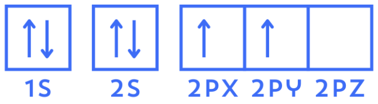
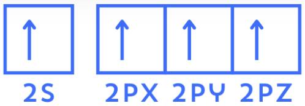

Hybridization, A Useful Lie
Carbon is atomic number 6, and has the electron configuration 1s² 2s² 2p², or [He] 2s² 2p². This simple orbital picture appears to give carbon only two singly occupied orbitals, suggesting two straightforward covalent bonds. However, experiments have shown that carbon can actually form four equivalent bonds, like in methane (CH₄).
What’s going on? Let's take a deeper look at carbon in the form of electron boxes.

If we stop looking at bonding through the lens of electron pairs, and instead focus on bonding through orbitals, you may think of the idea to “promote” one electron from the 2s orbital to the 2p𝗓 orbital.

Alright, we now have four singly occupied valence orbitals that can be used in a four bond description of methane. However methane contains four equivalent C-H bonds, which should be impossible seeing that the s and p orbitals are different in energy and shape.
That’s a classical explanation for what’s happening, at least. Quantum mechanically, methane’s molecular orbitals reflect something called the “Td symmetry” of the molecule, allowing the four bonding interactions to be equivalent. For simplicity, we will stay with the classical explanation for now.
The final step we must take is to “mix” these four orbitals together, mathematically converting them into four equivalent hybrid orbitals with the same energy. These “hybridized” orbitals are called sp³ orbitals, named that because they are made of one s orbital and three p orbitals. There are also sp² orbitals, made with one s orbital and two p orbitals, and sp orbitals made with one s orbital and one p orbital.
Imagine literally taking one 2s orbital and three 2p orbitals, and then mixing them together. You can then divide out four exact sp³ orbitals with the same energy level, higher in energy than a 2s orbital, but lower in energy than the 2p orbitals.
These orbitals can be described by the percentage of each orbitals character. For example, since sp³ orbitals are one part s orbital and three parts p orbitals, they can be said to have 25% s orbital character, and 75% p orbital character, and so on for the other hybridized orbitals.
Hooray! With these same four orbitals, we can now explain the four identical bonds of carbon in methane. You may have noticed we took a lot of strange steps and assumptions to get to this point, and so I must admit something.
Hybridization isn’t “real,” at least, it’s not real in the fact that it is not a literal physical process. Carbon does not actually “promote” its electrons and “hybridize” its orbitals together to form sp³ orbitals, these are simply accounting methods we use to explain these bonds. Hybridization is more like another generalized rule that can help explain why bonds like this happen.
You are able to determine the structure of methane using both VSEPR Theory and MO Theory without even touching hybridization, so why is it important?
Hybridization is important because it serves as a visual and mathematical bridge between simple Lewis structures and more complicated descriptions of molecular electronic structure. Although hybridization is not a literal physical process occurring inside atoms, it provides a convenient way to describe the directionality and geometry of bonds.
Chemists therefore still use terms such as sp, sp², and sp³ as useful shorthand for particular orbital descriptions, even though more fundamental approaches do not require hybridization.